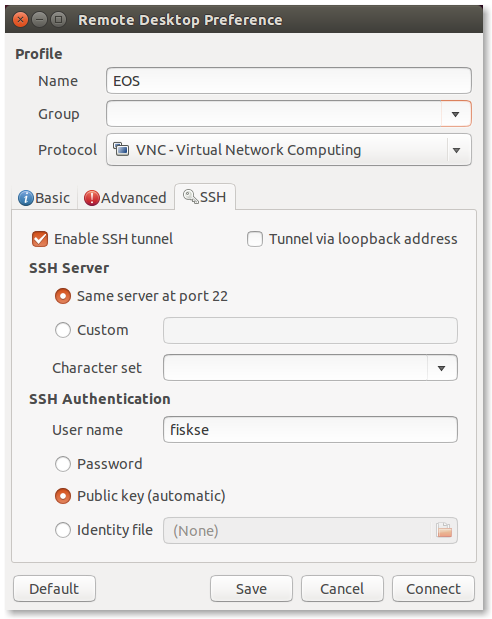
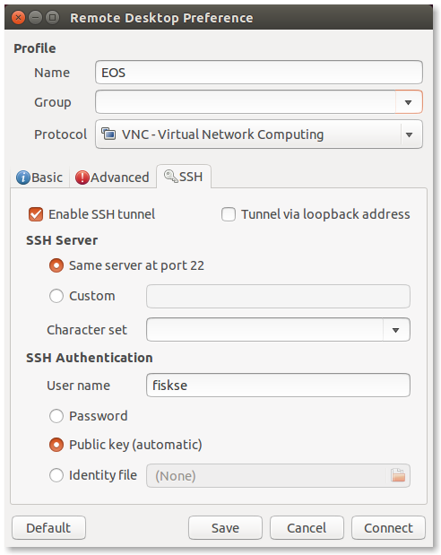

Graphical Access (VNC/X11)¶
VNC¶
First, we need to create a tunnel in order to forward VNC through our SSH connection. The remote port to which we must connect depends on the desired resolution of the remote desktop. Select a desired resolution from the following table, and note the port to which it corresponds.
| Display | Port | Geometry |
|---|---|---|
| 0 | 5900 | 1280x1024 |
| 1 | 5901 | 1024x768 |
| 2 | 5902 | 800x600 |
| 3 | 5903 | 640x480 |
| 4 | 5904 | 1440x900 |
| 5 | 5905 | 1280x800 |
| 6 | 5906 | 1152x864 |
| 7 | 5907 | 1680x1050 |
| 8 | 5908 | 1920x1200 |
| 9 | 5909 | 1400x1050 |
| 10 | 5910 | 1440x1000 |
| 11 | 5911 | 1024x600 |
| 12 | 5912 | 1600x900 |
| 13 | 5913 | 1920x1080 |
| 14 | 5914 | 1360x768 |
In the following instructions, replace REMOTE_PORT with the port that you have selected.
To create the tunnel, use the following command line:
ssh -L 5900:eosXX.cis.gvsu.edu:REMOTE_PORT smithj@eosXX.cis.gvsu.edu
Or the following configuration file:
Host eosvnc
HostName eosXX.cis.gvsu.edu
User smithj
LocalForward 5900 eosXX.cis.gvsu.edu:REMOTE_PORT
If you used the configuration file, run the following to create the tunnel:
ssh eosvnc
You are now ready to tunnel your VNC session.
There are a number of VNC clients for GNU/Linux, but the most capable and intuitive is Remmina (formerly tsclient). Remmina also supports RDP, so you can use it with Winserv. It installed by default in Ubuntu 14.04. If it is not installed in your distribution, you should install from your package manager.
In addition, Remmina supports automatic SSH tunneling. You do not need to establish a tunnel beforehand as shown in the previous section. However, if you need a shell or otherwise want to do it that way, there is nothing stopping you as it works just as well.
To configure Remmina for VNC with automatic SSH tunneling, open Remmina and select Connection ‣ New to create a new connection. Under the Basic and SSH tabs, respectively, enter the following information. This configuration uses EOS10 and port 5907, but use the host of your choice and the port which matches your resolution from the previous section. Because Public Key is selected, if you have set up password-less login earlier, the login should be automatic.
 

X Forwarding¶
Almost all GNU/Linux distributions come pre-installed with a fully functional X server (typically X.Org), so no installation is needed.
The ssh program needs to be told to initiate X forwarding when the connection is started. This can be done with the -X command-line flag:
ssh -X smithj@eosXX.cis.gvsu.edu
This can also be accomplished in the SSH configuration file:
Host eosx
HostName eos01.cis.gvsu.edu
User smithj
ForwardX11 yes
From your remote shell, try running a graphical program:
gedit
You may want to send the program to the background to regain use of the shell:
gedit &
X11 is a heavyweight protocol, and X11 sessions function best on high bandwidth, low latency connections. Remote applications running through X forwarding will typically be much less responsive than if they were running on an EOS machine. If you experience performance problems (and you probably will, depending on the applications that you use), consider using VNC. X forwarding is good for one-off applications, like viewing images or PDFs, but typically not good for editing text, web browsing, or running full desktop sessions. Always keep this in mind when using this technology.